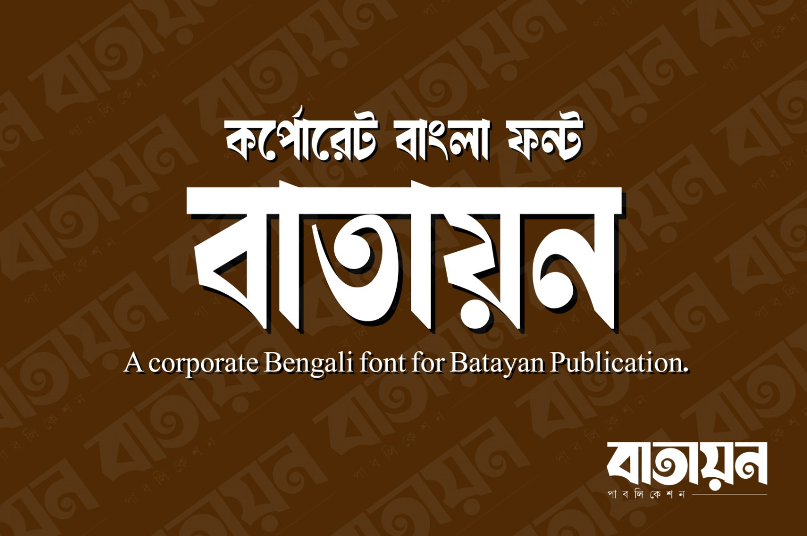
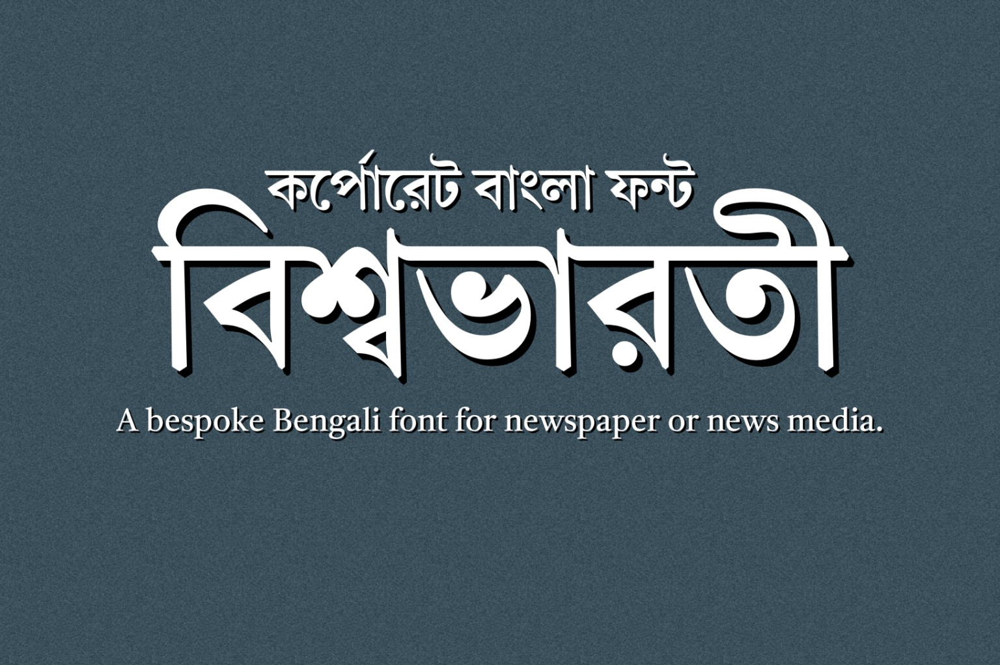

Magazine & Print Archive
Scans, photographs and notes from a growing collection.
PERSONAL ARCHIVE · PHOTOGRAPHY · NOTES
Welcome to the personal archive of Shishir Manik — a collection of photographs, magazine archives, observations and things I find worth keeping.
Explore the archive →Hello, I'm Shishir Manik.
I'm currently an undergraduate student and have been working with Bangla typography for a long time. Work on the design and development of Bangla fonts is currently underway.
A selection of corporate and commercial projects is presented below.


Scans, photographs and notes from a growing collection.
Rare magazines, newspapers and printed material.
Documents, references, images and other collected material.
Thoughts, observations, research and little discoveries.
New notes and essays can be added here over time.
Have something to share?
Add your email and social links here when you're ready.
hello@example.com ↗